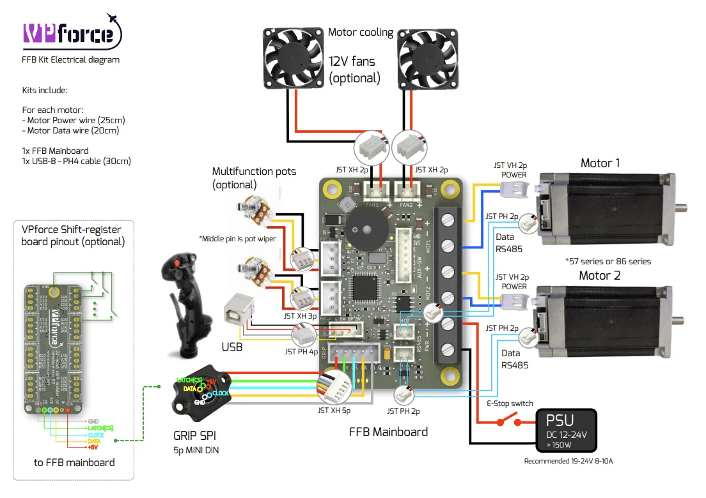

3. DIY Motor Kits¶
VPforce DIY kits provide the exact same professional-grade electronics, servo motors, and firmware platform that powers the Rhino FFB Base — in modular kit form. They are designed for builders who want to construct custom FFB joysticks, yokes, helicopter collectives, or pedal systems.
All prices exclude VAT. Available at order.vpforce.eu.
3.1 Kit Comparison¶
| Kit | Frame | Torque constant | Peak torque | Weight | Single kit | Dual kit |
|---|---|---|---|---|---|---|
| 3.4 57BLF03 | NEMA23 (57 mm) | 0.066 Nm/A | ≈ 1.98 Nm | 1.27 kg | 179 EUR | 299 EUR |
| 3.5 86BLF03 | NEMA34 (86 mm) | 0.11 Nm/A | ≈ 3.30 Nm | 2.5 kg | 229 EUR | 399 EUR |
| 3.6 86BLF04 | NEMA34 (86 mm) | 0.127 Nm/A | ≈ 3.81 Nm | 2.8 kg | 249 EUR | 429 EUR |
Dual-motor kits are designed for two-axis controls (joystick, yoke). Single-motor kits suit single-axis applications (rudder pedals, helicopter collective).

3.2 Core Features¶
All VPforce DIY kits share the following features:
- Software anti-cogging — motors are individually calibrated with cogging torque maps, virtually eliminating the notchy feel of raw brushless motors.
- Pre-tuned operation — motors and drivers are factory-configured for smooth FFB responses. No complex electrical setup is required during assembly.
- High-resolution encoder — integrated for fast, accurate position tracking essential for stable force rendering.
- Battle-tested durability — hardware proven in daily use by hobbyists and flight trainers worldwide.
3.2.1 Safety Mechanisms¶
- Safe low-voltage design — motors operate at 19–24 V DC.
- Temperature monitoring — built-in thermal sensors automatically limit power output when safe thresholds are exceeded.
- Software watchdog — forces neutralize automatically on control signal loss.
3.3 What’s in the Box¶
Each kit includes:
- 1× or 2× Brushless motors (single or dual)
- 1× VPforce FFB Mainboard
- 1× USB interface cable (30 cm)
- 1× Motor power cable (25 cm) per motor
- 1× Motor data cable (20 cm) per motor
3.4 57BLF03 Motor Kit¶
A compact workhorse that balances size and torque for light to medium FFB projects. The NEMA23 frame makes it compatible with widely available off-the-shelf mounting hardware.
Best for: Custom joysticks, light yokes, pedal conversions, space-constrained builds.
| Property | Value |
|---|---|
| Frame | NEMA23 — 57 × 101 mm |
| Torque constant | 0.066 Nm/A |
| Peak torque | ≈ 1.98 Nm |
| Weight | 1.27 kg per motor |
| Operating voltage | 19–24 V DC |
| Max phase current | 30 A (controller-limited) |
| Recommended PSU | 24 V, 8 A per motor |
| Shaft input | 8 mm (for third-party gearboxes) |
| Single kit | 179 EUR |
| Dual kit | 299 EUR |
Phase current vs. PSU current
30 A per phase is the peak current the VPforce controller drives through the motor windings — it is not the current you need from your power supply. Actual PSU draw (Ibus) is approximately 7–8 A per motor under typical load. See 3.7.2 Power Supply Sizing below.
3.5 86BLF03 Motor Kit¶
Mid-range performance in the larger NEMA34 frame. Suitable for two-axis joysticks and heavier rudder pedal builds where more torque is needed without the additional length of the 86BLF04.
Best for: Two-axis joysticks, heavier rudder pedal conversions, moderate extension setups.
| Property | Value |
|---|---|
| Frame | NEMA34 — 86 × 81 mm |
| Torque constant | 0.11 Nm/A |
| Peak torque | ≈ 3.30 Nm |
| Weight | 2.5 kg per motor |
| Operating voltage | 19–24 V DC |
| Max phase current | 30 A (controller-limited) |
| Recommended PSU | 24 V, 8 A per motor |
| Shaft input | 12.7 mm (for third-party gearboxes) |
| Single kit | 229 EUR |
| Dual kit | 399 EUR |
Phase current vs. PSU current
30 A per phase is the peak current the VPforce controller drives through the motor windings — it is not the current you need from your power supply. Actual PSU draw (Ibus) is approximately 7–8 A per motor under typical load. See 3.7.2 Power Supply Sizing below.
3.6 86BLF04 Motor Kit¶
The highest-torque configuration in the lineup. The longer motor body provides greater thermal mass, making it well-suited to demanding setups with long stick extensions or heavily loaded controls.
Best for: Long stick extensions, full-size replicated aircraft controls, helicopter goosenecks, high-load continuous operation.
| Property | Value |
|---|---|
| Frame | NEMA34 — 86 × 94 mm |
| Torque constant | 0.127 Nm/A |
| Peak torque | ≈ 3.81 Nm |
| Weight | 2.8 kg per motor |
| Operating voltage | 19–24 V DC |
| Max phase current | 30 A (controller-limited) |
| Recommended PSU | 24 V, 8 A per motor |
| Shaft input | 12.7 mm (for third-party gearboxes) |
| Single kit | 249 EUR |
| Dual kit | 429 EUR |
Phase current vs. PSU current
30 A per phase is the peak current the VPforce controller drives through the motor windings — it is not the current you need from your power supply. Actual PSU draw (Ibus) is approximately 7–8 A per motor under typical load. See 3.7.2 Power Supply Sizing below.
3.7 Assembly and Engineering Notes¶
3.7.1 Mechanical Transmission¶
Custom builds typically use 3D-printed (PETG or PA12) or CNC-machined frames. The transmission method — timing pulleys vs. planetary gearboxes — significantly affects the final feel.
Timing pulleys are cost-effective and commonplace in DIY projects.
Planetary gearboxes multiply torque and provide integrated bearing assemblies, but introduce considerations:
- Select a model rated at < 3 arcmin backlash. Higher backlash (25+ arcmin) creates a noticeable mechanical deadzone at center.
- Gearboxes add inertia that can make controls feel sluggish. The Natural Damping Compensation setting in the VPforce Configurator can cancel this effect out entirely.
- Shaft compatibility: 57BLF motors require an 8 mm gearbox input shaft; 86BLF motors require a 12.7 mm input shaft.
3.7.2 Power Supply Sizing¶
All VPforce kits operate at 19–24 V DC. Use 24 V when possible — the higher bus voltage reduces peak current draw and minimises voltage sag under load.
Motor phase current vs. PSU current
The motor spec tables list 30 A per phase (the peak current the VPforce controller drives through each motor winding). This is not the current your power supply needs to deliver. The actual bus current draw (Ibus, visible in the Configurator Debug tab) is approximately 7–8 A per motor under typical load, and this is similar across all motor variants (57BLF03, 86BLF03, 86BLF04) despite their different torque constants.
| Build | Recommended PSU |
|---|---|
| Single-axis (any motor) | 24 V, 8 A |
| Dual-axis (any motor) | 24 V, 15 A |
Diagonal movement and the PSU current limit
When both axes are deflected simultaneously (diagonal inputs), total Ibus can briefly approach the sum of both motors. Set the Max PSU Current in the Configurator Settings tab to your PSU’s rated output — the firmware will cap total Ibus at that value, spreading demand across both axes and preventing a lower-rated PSU from tripping. A correctly configured 10–12 A PSU can therefore work for a dual-axis build with this limit set appropriately.
Always monitor Ibus under real load in the Debug tab. If Vbus sags below ~20 V during peak demand, raise the Max PSU Current setting is not the fix — upgrade the PSU or reduce spring/gain settings.
3.7.3 Frame Materials¶
- PETG — good for prototyping and light-duty builds, widely available.
- PA12 (Nylon) — significantly stronger, suitable for production-quality builds.
- CNC aluminium or steel — maximum rigidity for demanding setups.
3.8 Software Integration¶
DIY kits run on the identical firmware and software platform as the Rhino FFB Base — there are no feature limitations.
- VPforce FFB Configurator — handles real-time tuning, diagnostics, and per-aircraft profile management across DCS, MSFS, IL-2, X-Plane, Falcon BMS, and Condor Soaring.
- TelemFFB — open-source companion app that synthesizes physics-based effects (stall buffet, turbulence, gunfire, engine vibration, wheel rumble) from live simulator telemetry.
3.9 Grip Adapters¶
See the dedicated Grip Adapters page for full compatibility details, setup instructions, and photos for the WinWing and VKB adapters.
3.10 Community Builds Using DIY Kits¶
The VPforce DIY ecosystem supports an active community of builders. Third-party vendors and open-source projects include:
- Kaltokri DIY Kits — pre-crimped solder-free conversion kits for MFG Crosswind, Thrustmaster TPR, and Virpil ACE pedals using 57BLF03 or 86BLF03 motors. See Third-Party Vendors →
- SR-F Winger Monster Rhino Kitbase — premium pre-assembled base using the 86BLF04 kit, designed for helicopter gooseneck extensions. See Third-Party Vendors →
- FFB Yoke (YuchenYan) — 3D-printable dual-axis yoke using 57BLF03 motors with a linear rail gantry. See Community Projects →
DIY Disclaimer
Community designs and third-party builds are not official VPforce products. You are responsible for the safety and reliability of your build. VPforce does not provide direct technical support for community or third-party projects. Peer support is available on the VPforce Discord.